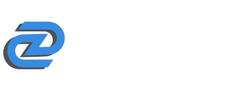

Tecnologia corporativa

Estratégia, tecnologia e inteligência institucional
Governança preventiva
Geração de Ativo Financeiro
Parcerias que ampliam capacidade, alcance e valor.
Oracle, modernização e inteligência aplicada
A Diamond Corporate atua em ambientes Oracle de alta relevância operacional, combinando experiência funcional, profundidade técnica e capacidade de modernização para sustentar, evoluir e transformar estruturas críticas com mais segurança e inteligência.
Mais do que sustentação básica, entregamos capacidade real de evolução para contextos corporativos que exigem estabilidade, performance, continuidade e visão de negócio.
Nossa atuação abrange JD Edwards, Oracle Database, PL/SQL, Oracle APEX, OCI e frentes de modernização orientadas à eficiência operacional e redução de risco.
Da sustentação de ambientes críticos à transformação de legados Oracle, reunimos repertório técnico, visão estratégica e capacidade de entrega para contextos que não admitem improviso.
JD Edwards
Consultoria funcional e técnica, evolução de ambiente, apoio a processos críticos e experiência real em modernização.
Database e PL/SQL
Administração, tuning, rotinas críticas, integrações e performance com foco em continuidade operacional.
Oracle APEX
Aplicações corporativas com foco em produtividade, integração, governança e modernização inteligente.
Forms → APEX com IA
Conversão apoiada por IA desenvolvida pela própria Diamond para acelerar jornadas de modernização com mais precisão e menos esforço manual.
Sobre a Diamond Corporate
A Diamond Corporate é uma empresa orientada à construção de valor por meio de atuação estratégica, soluções tecnológicas e articulação institucional qualificada.
Nossa atuação conecta tecnologia, inteligência institucional e parcerias relevantes para fortalecer empresas, ampliar capacidade de execução e sustentar decisões com mais consistência.
Mais do que oferecer serviços isolados, estruturamos frentes capazes de gerar modernização, eficiência, posicionamento institucional e crescimento com direção.
Presença estratégica, profundidade técnica e visão de longo prazo para transformar conexão em resultado.
Visão estratégica
Leitura de contexto, direção institucional e atuação orientada a crescimento com consistência.
Capacidade de articulação
Conexão entre tecnologia, parceiros, oportunidades e frentes de atuação com potencial real de valor.
Presença de mercado
Atuação voltada a relevância institucional, posicionamento qualificado e abertura de novos espaços.
Compromisso com entrega
Execução com seriedade, profundidade e foco em resultado sustentável para relações de longo prazo.
Programa Pulsar: governança preventiva e inteligência institucional
O Programa Pulsar estrutura uma infraestrutura estratégica de inteligência preventiva para organizações que não podem depender apenas de percepção individual.
Sua proposta organiza evidências, integra sinais humanos e institucionais, fortalece a capacidade de antecipação e sustenta decisões com mais previsibilidade, proteção e coerência.
Mais do que reagir a problemas já instalados, o Pulsar atua na leitura do que ainda está invisível: desgaste progressivo, perda silenciosa de vínculo, falhas de leitura integrada e riscos que normalmente só se tornam claros depois de gerarem impacto.
O que compromete retenção, reputação e sustentabilidade começa antes de ser percebido.
Diagnóstico institucional
Estruturação da inteligência preventiva
Monitoramento e governança contínua
Consolidação com relatórios estratégicos
Uma frente orientada à governança preventiva, à blindagem institucional e à construção de base segura para decisões mais inteligentes, sustentáveis e antecipatórias.
Conhecer o Programa PulsarGovernança preventiva
Estruturação formal de indicadores, organização de evidências e monitoramento contínuo para ampliar capacidade de antecipação.
Leitura integrada de sinais
Integração entre variáveis humanas, institucionais e contextuais para identificar risco antes do impacto.
Protocolos e blindagem
Registro estruturado, protocolos preventivos e segurança institucional para respostas mais consistentes e menos reativas.
Retenção e sustentabilidade
Proteção da permanência, da reputação e da sustentabilidade institucional com base em leitura qualificada.
Ativos Tributários, segurança e inteligência para a transição da Reforma
A Diamond Corporate, em parceria com a Vocare Tax, estrutura uma frente de gestão estratégica de ativos tributários orientada por segurança jurídica, engenharia financeira, compliance e inteligência de transição para a Reforma Tributária.
A proposta não se apoia em improviso nem em teses aventureiras, mas em método, previsibilidade e lastro técnico para identificar, calcular, auditar e transformar créditos e oportunidades em geração real de valor.
Com a evolução do cenário tributário brasileiro, a leitura correta dos ativos, riscos e oportunidades ganha ainda mais relevância. Essa frente combina abordagem consultiva, tecnologia proprietária, memória de cálculo auditável e processo 100% administrativo para apoiar empresas que precisam de segurança, clareza e direção.
Ativo tributário não é aposta. É valor que precisa ser identificado, estruturado e conduzido com segurança.
Uma frente construída para transformar complexidade tributária em leitura qualificada, segurança operacional e valor financeiro com direção estratégica.
Segurança jurídica e financeira
Processos conduzidos com fundamentação sólida, conformidade, rastreabilidade e acompanhamento estruturado.
Método e tecnologia proprietária
Cálculo técnico, auditoria minuciosa, retificação segura e inteligência aplicada à apuração e gestão de ativos.
Reforma Tributária e transição
Leitura estratégica do novo cenário, com apoio especializado para planejamento, adaptação e tomada de decisão.
Geração de valor com previsibilidade
Transformação de créditos e oportunidades em ativo financeiro com abordagem consultiva e segurança operacional.